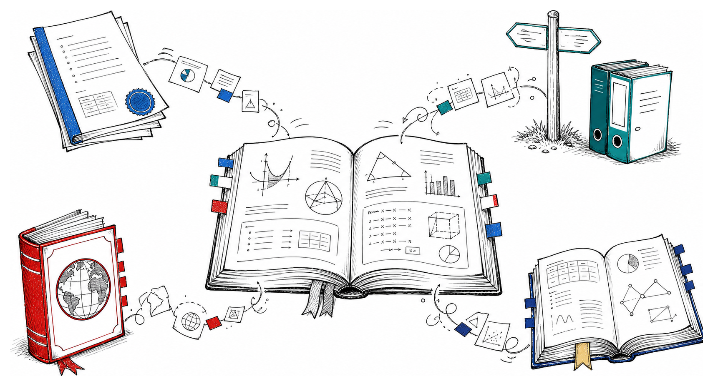
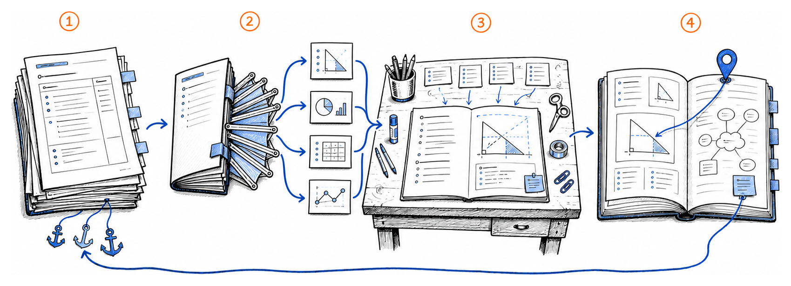
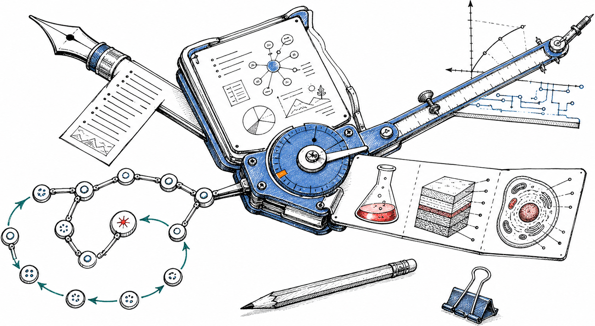
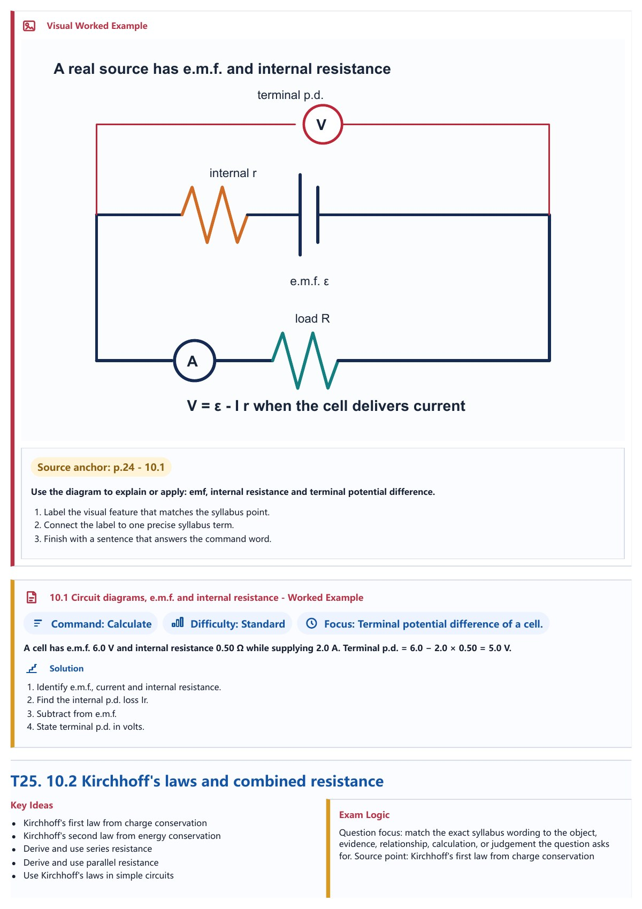
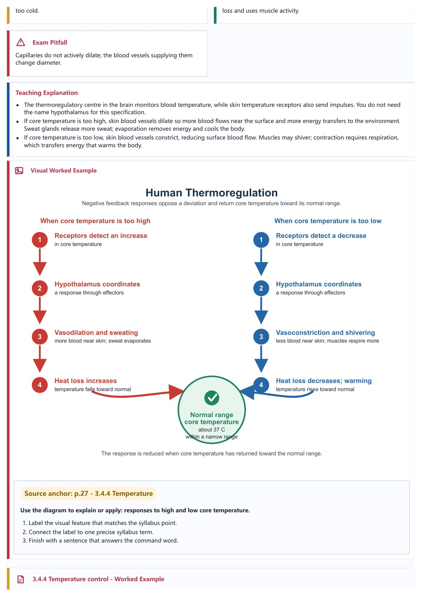
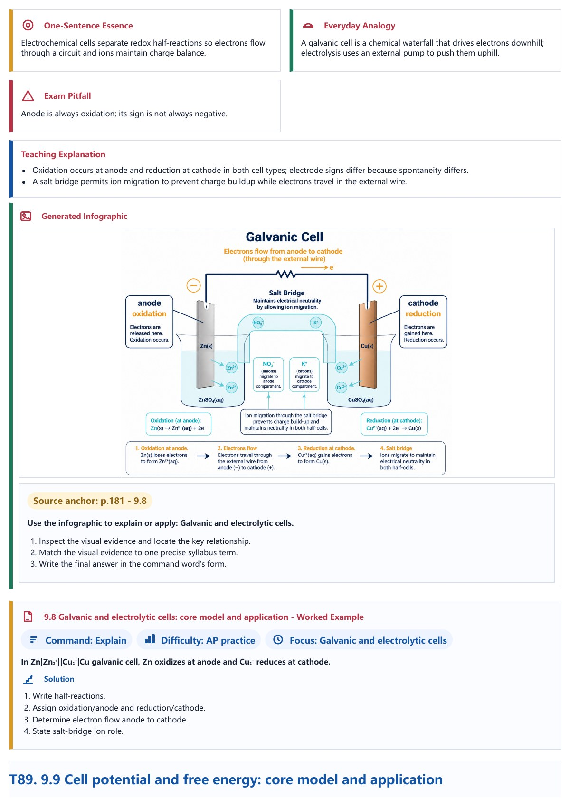
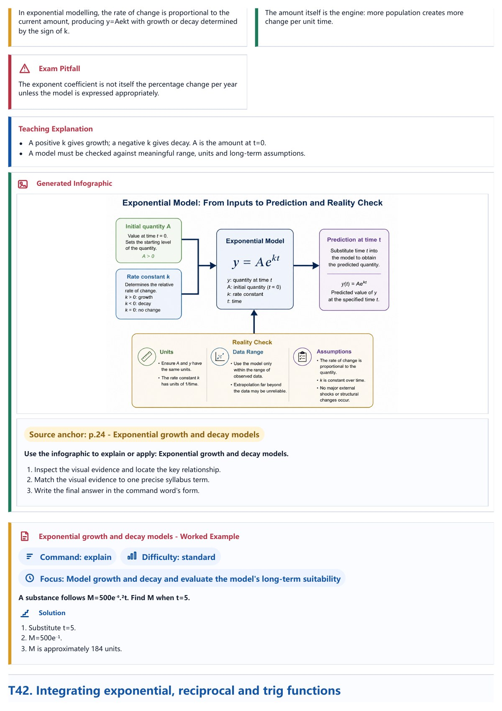

<!doctype html>
<html lang="en">
<head>
  <meta charset="utf-8">
  <meta name="viewport" content="width=device-width, initial-scale=1">
  <title>GCSE, IGCSE, A-Level & AP Revision Handbook Skill</title>
  <link rel="stylesheet" href="../intro-animation.css">
</head>
<body>
  <div id="root"></div>
  <script src="https://unpkg.com/react@18.3.1/umd/react.development.js" integrity="sha384-hD6/rw4ppMLGNu3tX5cjIb+uRZ7UkRJ6BPkLpg4hAu/6onKUg4lLsHAs9EBPT82L" crossorigin="anonymous"></script>
  <script src="https://unpkg.com/react-dom@18.3.1/umd/react-dom.development.js" integrity="sha384-u6aeetuaXnQ38mYT8rp6sbXaQe3NL9t+IBXmnYxwkUI2Hw4bsp2Wvmx4yRQF1uAm" crossorigin="anonymous"></script>
  <script src="https://unpkg.com/@babel/standalone@7.29.0/babel.min.js" integrity="sha384-m08KidiNqLdpJqLq95G/LEi8Qvjl/xUYll3QILypMoQ65QorJ9Lvtp2RXYGBFj1y" crossorigin="anonymous"></script>
  <script type="text/babel">

/* BEGIN USAGE */
// animations.jsx
// Reusable animation starter: Stage, Timeline, Sprite, easing helpers.
// Exports (to window): Stage, Sprite, PlaybackBar, TextSprite, ImageSprite, RectSprite,
//   useTime, useTimeline, useSprite, Easing, interpolate, animate, clamp.
//
// Usage (in an HTML file that loads React + Babel):
//
//   <Stage width={1280} height={720} duration={10} background="#f6f4ef">
//     <MyScene />
//   </Stage>
//
// <Stage> auto-scales to the viewport and provides the scrubber, play/pause,
// ←/→ seek, space, and 0-to-reset controls, and persists the playhead.
// Inside <Stage>, any child can call useTime() to read the current
// playhead (seconds). Or wrap content in <Sprite start={1} end={4}>...</Sprite>
// to only render during that window -- children receive a `localTime` and
// `progress` via the useSprite() hook. Use Easing + interpolate()/animate()
// for tweens; TextSprite / ImageSprite / RectSprite have built-in entry/exit.
// Build YOUR scenes by composing Sprites inside a Stage.
//
// Export: a Stage is recordable to a real .mp4 by gen-video (see the
// export-as-video built-in skill). Loading the page with ?capture (or passing
// <Stage capture>) strips the scrubber/letterboxing and renders one exact frame
// per seek, and the Stage registers a stable window.__animStage bridge
// (setTime/setPlaying/duration/...) that the exporter drives frame-by-frame.
/* END USAGE */
// ─────────────────────────────────────────────────────────────────────────────

// ── Easing functions (hand-rolled, Popmotion-style) ─────────────────────────
// All easings take t ∈ [0,1] and return eased t ∈ [0,1] (may overshoot for back/elastic).
const Easing = {
  linear: (t) => t,

  // Quad
  easeInQuad:    (t) => t * t,
  easeOutQuad:   (t) => t * (2 - t),
  easeInOutQuad: (t) => (t < 0.5 ? 2 * t * t : -1 + (4 - 2 * t) * t),

  // Cubic
  easeInCubic:    (t) => t * t * t,
  easeOutCubic:   (t) => (--t) * t * t + 1,
  easeInOutCubic: (t) => (t < 0.5 ? 4 * t * t * t : (t - 1) * (2 * t - 2) * (2 * t - 2) + 1),

  // Quart
  easeInQuart:    (t) => t * t * t * t,
  easeOutQuart:   (t) => 1 - (--t) * t * t * t,
  easeInOutQuart: (t) => (t < 0.5 ? 8 * t * t * t * t : 1 - 8 * (--t) * t * t * t),

  // Expo
  easeInExpo:  (t) => (t === 0 ? 0 : Math.pow(2, 10 * (t - 1))),
  easeOutExpo: (t) => (t === 1 ? 1 : 1 - Math.pow(2, -10 * t)),
  easeInOutExpo: (t) => {
    if (t === 0) return 0;
    if (t === 1) return 1;
    if (t < 0.5) return 0.5 * Math.pow(2, 20 * t - 10);
    return 1 - 0.5 * Math.pow(2, -20 * t + 10);
  },

  // Sine
  easeInSine:    (t) => 1 - Math.cos((t * Math.PI) / 2),
  easeOutSine:   (t) => Math.sin((t * Math.PI) / 2),
  easeInOutSine: (t) => -(Math.cos(Math.PI * t) - 1) / 2,

  // Back (overshoot)
  easeOutBack: (t) => {
    const c1 = 1.70158, c3 = c1 + 1;
    return 1 + c3 * Math.pow(t - 1, 3) + c1 * Math.pow(t - 1, 2);
  },
  easeInBack: (t) => {
    const c1 = 1.70158, c3 = c1 + 1;
    return c3 * t * t * t - c1 * t * t;
  },
  easeInOutBack: (t) => {
    const c1 = 1.70158, c2 = c1 * 1.525;
    return t < 0.5
      ? (Math.pow(2 * t, 2) * ((c2 + 1) * 2 * t - c2)) / 2
      : (Math.pow(2 * t - 2, 2) * ((c2 + 1) * (t * 2 - 2) + c2) + 2) / 2;
  },

  // Elastic
  easeOutElastic: (t) => {
    const c4 = (2 * Math.PI) / 3;
    if (t === 0) return 0;
    if (t === 1) return 1;
    return Math.pow(2, -10 * t) * Math.sin((t * 10 - 0.75) * c4) + 1;
  },
};

// ── Core interpolation helpers ──────────────────────────────────────────────

// Clamp a value to [min, max]
const clamp = (v, min, max) => Math.max(min, Math.min(max, v));

// interpolate([0, 0.5, 1], [0, 100, 50], ease?) -> fn(t)
// Popmotion-style: linearly maps t across input keyframes to output values,
// with optional easing per segment (single fn or array of fns).
function interpolate(input, output, ease = Easing.linear) {
  return (t) => {
    if (t <= input[0]) return output[0];
    if (t >= input[input.length - 1]) return output[output.length - 1];
    for (let i = 0; i < input.length - 1; i++) {
      if (t >= input[i] && t <= input[i + 1]) {
        const span = input[i + 1] - input[i];
        const local = span === 0 ? 0 : (t - input[i]) / span;
        const easeFn = Array.isArray(ease) ? (ease[i] || Easing.linear) : ease;
        const eased = easeFn(local);
        return output[i] + (output[i + 1] - output[i]) * eased;
      }
    }
    return output[output.length - 1];
  };
}

// animate({from, to, start, end, ease})(t) — simpler single-segment tween.
// Returns `from` before `start`, `to` after `end`.
function animate({ from = 0, to = 1, start = 0, end = 1, ease = Easing.easeInOutCubic }) {
  return (t) => {
    if (t <= start) return from;
    if (t >= end) return to;
    const local = (t - start) / (end - start);
    return from + (to - from) * ease(local);
  };
}

// ── Timeline context ────────────────────────────────────────────────────────

const TimelineContext = React.createContext({ time: 0, duration: 10, playing: false });

const useTime = () => React.useContext(TimelineContext).time;
const useTimeline = () => React.useContext(TimelineContext);

// ── Sprite ──────────────────────────────────────────────────────────────────
// Renders children only when the playhead is inside [start, end]. Provides
// a sub-context with `localTime` (seconds since start) and `progress` (0..1).
//
//   <Sprite start={2} end={5}>
//     {({ localTime, progress }) => <Thing x={progress * 100} />}
//   </Sprite>
//
// Or as a plain wrapper — children can call useSprite() themselves.

const SpriteContext = React.createContext({ localTime: 0, progress: 0, duration: 0 });
const useSprite = () => React.useContext(SpriteContext);

function Sprite({ start = 0, end = Infinity, children, keepMounted = false }) {
  const { time } = useTimeline();
  const visible = time >= start && time <= end;
  if (!visible && !keepMounted) return null;

  const duration = end - start;
  const localTime = Math.max(0, time - start);
  const progress = duration > 0 && isFinite(duration)
    ? clamp(localTime / duration, 0, 1)
    : 0;

  const value = { localTime, progress, duration, visible };

  return (
    <SpriteContext.Provider value={value}>
      {typeof children === 'function' ? children(value) : children}
    </SpriteContext.Provider>
  );
}

// ── Sample sprite components ────────────────────────────────────────────────

// TextSprite: fades/slides text in on entry, holds, then fades out on exit.
// Props: text, x, y, size, color, font, entryDur, exitDur, align
function TextSprite({
  text,
  x = 0, y = 0,
  size = 48,
  color = '#111',
  font = 'Inter, system-ui, sans-serif',
  weight = 600,
  entryDur = 0.45,
  exitDur = 0.35,
  entryEase = Easing.easeOutBack,
  exitEase = Easing.easeInCubic,
  align = 'left',
  letterSpacing = '-0.01em',
}) {
  const { localTime, duration } = useSprite();
  const exitStart = Math.max(0, duration - exitDur);

  let opacity = 1;
  let ty = 0;

  if (localTime < entryDur) {
    const t = entryEase(clamp(localTime / entryDur, 0, 1));
    opacity = t;
    ty = (1 - t) * 16;
  } else if (localTime > exitStart) {
    const t = exitEase(clamp((localTime - exitStart) / exitDur, 0, 1));
    opacity = 1 - t;
    ty = -t * 8;
  }

  const translateX = align === 'center' ? '-50%' : align === 'right' ? '-100%' : '0';

  return (
    <div style={{
      position: 'absolute',
      left: x, top: y,
      transform: `translate(${translateX}, ${ty}px)`,
      opacity,
      fontFamily: font,
      fontSize: size,
      fontWeight: weight,
      color,
      letterSpacing,
      whiteSpace: 'pre',
      lineHeight: 1.1,
      willChange: 'transform, opacity',
    }}>
      {text}
    </div>
  );
}

// ImageSprite: scales + fades in; optional Ken Burns drift during hold.
function ImageSprite({
  src,
  x = 0, y = 0,
  width = 400, height = 300,
  entryDur = 0.6,
  exitDur = 0.4,
  kenBurns = false,
  kenBurnsScale = 1.08,
  radius = 12,
  fit = 'cover',
  placeholder = null, // {label: string} for striped placeholder
}) {
  const { localTime, duration } = useSprite();
  const exitStart = Math.max(0, duration - exitDur);

  let opacity = 1;
  let scale = 1;

  if (localTime < entryDur) {
    const t = Easing.easeOutCubic(clamp(localTime / entryDur, 0, 1));
    opacity = t;
    scale = 0.96 + 0.04 * t;
  } else if (localTime > exitStart) {
    const t = Easing.easeInCubic(clamp((localTime - exitStart) / exitDur, 0, 1));
    opacity = 1 - t;
    scale = (kenBurns ? kenBurnsScale : 1) + 0.02 * t;
  } else if (kenBurns) {
    const holdSpan = exitStart - entryDur;
    const holdT = holdSpan > 0 ? (localTime - entryDur) / holdSpan : 0;
    scale = 1 + (kenBurnsScale - 1) * holdT;
  }

  const content = placeholder ? (
    <div style={{
      width: '100%', height: '100%',
      display: 'flex', alignItems: 'center', justifyContent: 'center',
      background: 'repeating-linear-gradient(135deg, #e9e6df 0 10px, #dcd8cf 10px 20px)',
      color: '#6b6458',
      fontFamily: 'JetBrains Mono, ui-monospace, monospace',
      fontSize: 13,
      letterSpacing: '0.04em',
      textTransform: 'uppercase',
    }}>
      {placeholder.label || 'image'}
    </div>
  ) : (
    
  );

  return (
    <div style={{
      position: 'absolute',
      left: x, top: y,
      width, height,
      opacity,
      transform: `scale(${scale})`,
      transformOrigin: 'center',
      borderRadius: radius,
      overflow: 'hidden',
      willChange: 'transform, opacity',
    }}>
      {content}
    </div>
  );
}

// RectSprite: simple rectangle that animates position/size/color via props.
// Useful demo primitive — takes a `render` fn for per-frame customization.
function RectSprite({
  x = 0, y = 0,
  width = 100, height = 100,
  color = '#111',
  radius = 8,
  entryDur = 0.4,
  exitDur = 0.3,
  render, // optional: (ctx) => style overrides
}) {
  const spriteCtx = useSprite();
  const { localTime, duration } = spriteCtx;
  const exitStart = Math.max(0, duration - exitDur);

  let opacity = 1;
  let scale = 1;

  if (localTime < entryDur) {
    const t = Easing.easeOutBack(clamp(localTime / entryDur, 0, 1));
    opacity = clamp(localTime / entryDur, 0, 1);
    scale = 0.4 + 0.6 * t;
  } else if (localTime > exitStart) {
    const t = Easing.easeInQuad(clamp((localTime - exitStart) / exitDur, 0, 1));
    opacity = 1 - t;
    scale = 1 - 0.15 * t;
  }

  const overrides = render ? render(spriteCtx) : {};

  return (
    <div style={{
      position: 'absolute',
      left: x, top: y,
      width, height,
      background: color,
      borderRadius: radius,
      opacity,
      transform: `scale(${scale})`,
      transformOrigin: 'center',
      willChange: 'transform, opacity',
      ...overrides,
    }} />
  );
}


// Detect capture mode: a `capture` prop, or a `?capture` URL param (the value
// must not be "0"/"false"). In capture mode the Stage renders one exact,
// chrome-free frame per seek so gen-video can record it.
function detectCapture(prop) {
  if (prop) return true;
  try {
    const params = new URLSearchParams(window.location.search);
    if (params.has('t')) return true;
    if (!params.has('capture')) return false;
    const v = params.get('capture');
    return v !== '0' && v !== 'false';
  } catch { return false; }
}

function initialCaptureTime(duration) {
  try {
    const params = new URLSearchParams(window.location.search);
    const t = parseFloat(params.get('t') || '0');
    return isFinite(t) ? clamp(t, 0, duration) : 0;
  } catch {
    return 0;
  }
}

function Stage({
  width = 1280,
  height = 720,
  duration = 10,
  background = '#f6f4ef',
  fps = 60,
  loop = true,
  autoplay = true,
  persistKey = 'animstage',
  capture = false,
  children,
}) {
  const captureMode = detectCapture(capture);

  const [time, setTime] = React.useState(() => {
    if (captureMode) return initialCaptureTime(duration); // deterministic: ignore persisted playhead
    try {
      const v = parseFloat(localStorage.getItem(persistKey + ':t') || '0');
      return isFinite(v) ? clamp(v, 0, duration) : 0;
    } catch { return 0; }
  });
  const [playing, setPlaying] = React.useState(captureMode ? false : autoplay);
  const [hoverTime, setHoverTime] = React.useState(null);
  const [scale, setScale] = React.useState(1);

  const stageRef = React.useRef(null);
  const canvasRef = React.useRef(null);
  const rafRef = React.useRef(null);
  const lastTsRef = React.useRef(null);

  // Persist playhead (skipped in capture mode)
  React.useEffect(() => {
    if (captureMode) return;
    try { localStorage.setItem(persistKey + ':t', String(time)); } catch {}
  }, [time, persistKey, captureMode]);

  // Auto-scale to fit viewport (forced to 1:1 in capture mode)
  React.useEffect(() => {
    if (captureMode) { setScale(1); return; }
    if (!stageRef.current) return;
    const el = stageRef.current;
    const measure = () => {
      const barH = 44; // playback bar height
      const s = Math.min(
        el.clientWidth / width,
        (el.clientHeight - barH) / height
      );
      setScale(Math.max(0.05, s));
    };
    measure();
    const ro = new ResizeObserver(measure);
    ro.observe(el);
    window.addEventListener('resize', measure);
    return () => {
      ro.disconnect();
      window.removeEventListener('resize', measure);
    };
  }, [width, height, captureMode]);

  // ── Capture bridge ──────────────────────────────────────────────────────
  // Expose a stable-identity window.__animStage so the gen-video exporter can
  // seek/pause/measure. Dynamic values are read through a ref so the object
  // never has to be re-created. Backward-compatible with any setTime/duration
  // bridge (the exporter needs only setTime/setPlaying/duration).
  const bridgeStateRef = React.useRef(null);
  bridgeStateRef.current = { time, duration, fps, width, height, captureMode, setTime, setPlaying };
  React.useEffect(() => {
    const s = bridgeStateRef;
    const bridge = {
      version: 1,
      ready: true,
      get captureActive() { return s.current.captureMode; },
      setTime: (t) => s.current.setTime(clamp(t, 0, s.current.duration)),
      setPlaying: (p) => s.current.setPlaying(!!p),
      getTime: () => s.current.time,
      get duration() { return s.current.duration; },
      get fps() { return s.current.fps; },
      get width() { return s.current.width; },
      get height() { return s.current.height; },
    };
    window.__animStage = bridge;
    return () => { if (window.__animStage === bridge) delete window.__animStage; };
  }, []);

  // Animation loop
  React.useEffect(() => {
    if (!playing) {
      lastTsRef.current = null;
      return;
    }
    const step = (ts) => {
      if (lastTsRef.current == null) lastTsRef.current = ts;
      const dt = (ts - lastTsRef.current) / 1000;
      lastTsRef.current = ts;
      setTime((t) => {
        let next = t + dt;
        if (next >= duration) {
          if (loop) next = next % duration;
          else { next = duration; setPlaying(false); }
        }
        return next;
      });
      rafRef.current = requestAnimationFrame(step);
    };
    rafRef.current = requestAnimationFrame(step);
    return () => {
      if (rafRef.current) cancelAnimationFrame(rafRef.current);
      lastTsRef.current = null;
    };
  }, [playing, duration, loop]);

  // Keyboard: space = play/pause, ← → = seek
  React.useEffect(() => {
    const onKey = (e) => {
      if (e.target && (e.target.tagName === 'INPUT' || e.target.tagName === 'TEXTAREA')) return;
      if (e.code === 'Space') {
        e.preventDefault();
        setPlaying(p => !p);
      } else if (e.code === 'ArrowLeft') {
        setTime(t => clamp(t - (e.shiftKey ? 1 : 0.1), 0, duration));
      } else if (e.code === 'ArrowRight') {
        setTime(t => clamp(t + (e.shiftKey ? 1 : 0.1), 0, duration));
      } else if (e.key === '0' || e.code === 'Home') {
        setTime(0);
      }
    };
    window.addEventListener('keydown', onKey);
    return () => window.removeEventListener('keydown', onKey);
  }, [duration]);

  const displayTime = hoverTime != null ? hoverTime : time;

  const ctxValue = React.useMemo(
    () => ({ time: displayTime, duration, playing, setTime, setPlaying }),
    [displayTime, duration, playing]
  );

  return (
    <div
      ref={stageRef}
      style={{
        position: 'absolute', inset: 0,
        display: 'flex', flexDirection: 'column',
        alignItems: 'center',
        background: captureMode ? 'transparent' : '#0a0a0a',
        fontFamily: 'Inter, system-ui, sans-serif',
      }}
    >
      {/* Kill transitions in capture mode so each seeked frame is exact */}
      {captureMode && <style>{'*{transition:none !important;}'}</style>}

      {/* Canvas area — vertically centered in remaining space */}
      <div style={{
        flex: 1,
        width: '100%',
        display: 'flex',
        alignItems: captureMode ? 'flex-start' : 'center',
        justifyContent: captureMode ? 'flex-start' : 'center',
        overflow: captureMode ? 'visible' : 'hidden',
        minHeight: 0,
      }}>
        <div
          ref={canvasRef}
          data-stage-canvas
          style={{
            width, height,
            background,
            position: 'relative',
            transform: captureMode ? 'none' : `scale(${scale})`,
            transformOrigin: 'center',
            flexShrink: 0,
            boxShadow: captureMode ? 'none' : '0 20px 60px rgba(0,0,0,0.4)',
            overflow: 'hidden',
          }}
        >
          <TimelineContext.Provider value={ctxValue}>
            {children}
          </TimelineContext.Provider>
        </div>
      </div>

      {/* Playback bar — stacked below canvas, never overlapping. Hidden in
          capture mode; data-stage-chrome lets gen-video's CSS fallback hide it
          on copies loaded without ?capture. */}
      {!captureMode && (
        <PlaybackBar
          time={displayTime}
          actualTime={time}
          duration={duration}
          playing={playing}
          onPlayPause={() => setPlaying(p => !p)}
          onReset={() => { setTime(0); }}
          onSeek={(t) => setTime(t)}
          onHover={(t) => setHoverTime(t)}
        />
      )}
    </div>
  );
}

// ── Playback bar ────────────────────────────────────────────────────────────
// Play/pause, return-to-begin, scrub track, time display.
// Uses fixed-width time fields so layout doesn't thrash.

function PlaybackBar({ time, duration, playing, onPlayPause, onReset, onSeek, onHover }) {
  const trackRef = React.useRef(null);
  const [dragging, setDragging] = React.useState(false);

  const timeFromEvent = React.useCallback((e) => {
    const rect = trackRef.current.getBoundingClientRect();
    const x = clamp((e.clientX - rect.left) / rect.width, 0, 1);
    return x * duration;
  }, [duration]);

  const onTrackMove = (e) => {
    if (!trackRef.current) return;
    const t = timeFromEvent(e);
    if (dragging) {
      onSeek(t);
    } else {
      onHover(t);
    }
  };

  const onTrackLeave = () => {
    if (!dragging) onHover(null);
  };

  const onTrackDown = (e) => {
    setDragging(true);
    const t = timeFromEvent(e);
    onSeek(t);
    onHover(null);
  };

  React.useEffect(() => {
    if (!dragging) return;
    const onUp = () => setDragging(false);
    const onMove = (e) => {
      if (!trackRef.current) return;
      const t = timeFromEvent(e);
      onSeek(t);
    };
    window.addEventListener('mouseup', onUp);
    window.addEventListener('mousemove', onMove);
    return () => {
      window.removeEventListener('mouseup', onUp);
      window.removeEventListener('mousemove', onMove);
    };
  }, [dragging, timeFromEvent, onSeek]);

  const pct = duration > 0 ? (time / duration) * 100 : 0;
  const fmt = (t) => {
    const total = Math.max(0, t);
    const m = Math.floor(total / 60);
    const s = Math.floor(total % 60);
    const cs = Math.floor((total * 100) % 100);
    return `${String(m).padStart(1, '0')}:${String(s).padStart(2, '0')}.${String(cs).padStart(2, '0')}`;
  };

  const mono = 'JetBrains Mono, ui-monospace, SFMono-Regular, monospace';

  return (
    <div data-stage-chrome style={{
      display: 'flex', alignItems: 'center', gap: 12,
      padding: '8px 16px',
      background: 'rgba(20,20,20,0.92)',
      borderTop: '1px solid rgba(255,255,255,0.08)',
      width: '100%',
      maxWidth: 680,
      alignSelf: 'center',

      borderRadius: 8,
      color: '#f6f4ef',
      fontFamily: 'Inter, system-ui, sans-serif',
      userSelect: 'none',
      flexShrink: 0,
    }}>
      <IconButton onClick={onReset} title="Return to start (0)">
        <svg width="14" height="14" viewBox="0 0 14 14" fill="none">
          <path d="M3 2v10M12 2L5 7l7 5V2z" stroke="currentColor" strokeWidth="1.5" strokeLinejoin="round" strokeLinecap="round"/>
        </svg>
      </IconButton>
      <IconButton onClick={onPlayPause} title="Play/pause (space)">
        {playing ? (
          <svg width="14" height="14" viewBox="0 0 14 14" fill="none">
            <rect x="3" y="2" width="3" height="10" fill="currentColor"/>
            <rect x="8" y="2" width="3" height="10" fill="currentColor"/>
          </svg>
        ) : (
          <svg width="14" height="14" viewBox="0 0 14 14" fill="none">
            <path d="M3 2l9 5-9 5V2z" fill="currentColor"/>
          </svg>
        )}
      </IconButton>

      {/* Current time: fixed width so it doesn't thrash */}
      <div style={{
        fontFamily: mono,
        fontSize: 12,
        fontVariantNumeric: 'tabular-nums',
        width: 64, textAlign: 'right',
        color: '#f6f4ef',
      }}>
        {fmt(time)}
      </div>

      {/* Scrub track */}
      <div
        ref={trackRef}
        onMouseMove={onTrackMove}
        onMouseLeave={onTrackLeave}
        onMouseDown={onTrackDown}
        style={{
          flex: 1,
          height: 22,
          position: 'relative',
          cursor: 'pointer',
          display: 'flex', alignItems: 'center',
        }}
      >
        <div style={{
          position: 'absolute',
          left: 0, right: 0, height: 4,
          background: 'rgba(255,255,255,0.12)',
          borderRadius: 2,
        }}/>
        <div style={{
          position: 'absolute',
          left: 0, width: `${pct}%`, height: 4,
          background: 'oklch(72% 0.12 250)',
          borderRadius: 2,
        }}/>
        <div style={{
          position: 'absolute',
          left: `${pct}%`, top: '50%',
          width: 12, height: 12,
          marginLeft: -6, marginTop: -6,
          background: '#fff',
          borderRadius: 6,
          boxShadow: '0 2px 4px rgba(0,0,0,0.4)',
        }}/>
      </div>

      {/* Duration: fixed width */}
      <div style={{
        fontFamily: mono,
        fontSize: 12,
        fontVariantNumeric: 'tabular-nums',
        width: 64, textAlign: 'left',
        color: 'rgba(246,244,239,0.55)',
      }}>
        {fmt(duration)}
      </div>
    </div>
  );
}

function IconButton({ children, onClick, title }) {
  const [hover, setHover] = React.useState(false);
  return (
    <button
      onClick={onClick}
      title={title}
      onMouseEnter={() => setHover(true)}
      onMouseLeave={() => setHover(false)}
      style={{
        width: 28, height: 28,
        display: 'flex', alignItems: 'center', justifyContent: 'center',
        background: hover ? 'rgba(255,255,255,0.12)' : 'rgba(255,255,255,0.04)',
        border: '1px solid rgba(255,255,255,0.1)',
        borderRadius: 6,
        color: '#f6f4ef',
        cursor: 'pointer',
        padding: 0,
        transition: 'background 120ms',
      }}
    >
      {children}
    </button>
  );
}


Object.assign(window, {
  Easing, interpolate, animate, clamp,
  TimelineContext, useTime, useTimeline,
  Sprite, SpriteContext, useSprite,
  TextSprite, ImageSprite, RectSprite,
  Stage, PlaybackBar,
});
  </script>
  <script type="text/babel">
const { Stage, Sprite, useTime, Easing, clamp } = window;

const TOTAL_DURATION = 48;

const boards = [
  { name: "AQA", accent: "#1666b1" },
  { name: "Edexcel", accent: "#007d86" },
  { name: "CAIE", accent: "#c8323f" },
  { name: "College Board AP", accent: "#2255a4" },
];

const sampleBooks = [
  {
    title: "OxfordAQA IGCSE Biology",
    note: "Photosynthesis · carbon cycle · thermoregulation",
    accent: "#1666b1",
    pages: ["../v060-oxfordaqa-biology-p12.jpg", "../v060-oxfordaqa-biology-p21.jpg", "../v060-oxfordaqa-biology-p28.jpg"],
  },
  {
    title: "CAIE AS Physics",
    note: "Projectiles · stationary waves · internal resistance",
    accent: "#c8323f",
    pages: ["../v060-caie-physics-p10.jpg", "../v060-caie-physics-p25.jpg", "../v060-caie-physics-p30.jpg"],
  },
  {
    title: "College Board AP Chemistry",
    note: "PES · titration · galvanic cells",
    accent: "#2255a4",
    pages: ["../v060-ap-chemistry-p11.jpg", "../v060-ap-chemistry-p43.jpg", "../v060-ap-chemistry-p91.jpg"],
  },
  {
    title: "Edexcel IAL Mathematics",
    note: "Exponential models · mechanics · probability",
    accent: "#007d86",
    pages: ["../v060-edexcel-mathematics-p52.jpg", "../v060-edexcel-mathematics-p74.jpg", "../v060-edexcel-mathematics-p99.jpg"],
  },
];

function useSceneMotion(start, end, lift = 30) {
  const time = useTime();
  const enter = clamp((time - start) / 0.68, 0, 1);
  const exit = clamp((end - time) / 0.5, 0, 1);
  const opacity = Math.min(Easing.easeOutCubic(enter), Easing.easeOutCubic(exit));
  const y = (1 - Easing.easeOutCubic(enter)) * lift - (1 - Easing.easeOutCubic(exit)) * 14;
  return { opacity, transform: `translateY(${y}px)` };
}

function Scene({ start, end, className = "", children }) {
  return <Sprite start={start} end={end} keepMounted={true}><section className={`scene ${className}`} style={useSceneMotion(start, end)}>{children}</section></Sprite>;
}

function Stagger({ start, index, children }) {
  const time = useTime();
  const p = clamp((time - start - index * 0.12) / 0.55, 0, 1);
  return <div style={{ opacity: p, transform: `translateY(${(1 - Easing.easeOutCubic(p)) * 34}px)` }}>{children}</div>;
}

function Background() {
  return <div className="stage-bg"><div className="color-rail">{Array.from({ length: 8 }, (_, index) => <i key={index}></i>)}</div></div>;
}

function IntroScene() {
  return <Scene start={0} end={5.6}><div className="kicker">Open-source revision handbook Skill</div><h1 className="headline infographic-headline">Turn official course requirements into handbooks students can really learn from.</h1><p className="lead">GCSE, IGCSE, A-Level, and AP with explicit boundaries for sources, writing, visuals, review, and PDF delivery.</p><div className="imagegen-visual provider-art"><div className="visual-legend provider-legend">{boards.map((board, index) => <Stagger start={0.9} index={index} key={board.name}><span style={{ "--accent": board.accent }}>{board.name}</span></Stagger>)}</div></div></Scene>;
}

function PreflightScene() {
  const rows = [["01", "External image capability", "Confirm a callable route; never default to local generation"], ["02", "Board and level", "GCSE / IGCSE / A-Level / AP; record AS, A2, or full stage"], ["03", "Course market", "AQA, Edexcel, and CAIE require International or UK"], ["04", "Subject, year, and language", "Stop for user choice when sources are ambiguous"], ["05", "Workflow and output", "Single-host role passes or user-requested multi-agent mode"]];
  return <Scene start={5.3} end={11.0}><div className="kicker">Hard first-turn preflight</div><h2 className="headline compact">The first turn collects every choice. Until then, nothing downstream may run.</h2><div className="preflight-layout"><div className="preflight-form">{rows.map((row, index) => <Stagger start={5.9} index={index} key={row[0]}><div className="form-row"><b>{row[0]}</b><strong>{row[1]}</strong><span>{row[2]}</span></div></Stagger>)}</div><div className="gate-panel"><div className="gate-number">01</div><h3>Lock the visual route first</h3><p>Text inside teaching visuals is allowed. What is blocked is incorrect, unreadable, unsourced, or unnecessary text and any image route that has not actually been verified.</p><div className="lock-state">PRECHECK INCOMPLETE → DOWNLOAD / WRITING / RENDER BLOCKED</div></div></div></Scene>;
}

function ProviderScene() {
  const data = [["AQA", "OxfordAQA / AQA", "International uses OxfordAQA; UK domestic uses the official AQA catalogue.", ["UK GCSE", "International GCSE", "A-Level (AS/A2)"], "#1666b1"], ["Edexcel", "Pearson", "Preflight selects Pearson International or Pearson UK, without source mixing.", ["UK GCSE", "International GCSE", "A-Level (AS/A2)"], "#007d86"], ["CAIE", "Cambridge", "Use the Cambridge International catalogue and retain the selected market in metadata.", ["International GCSE", "Cambridge A-Level", "Market recorded"], "#c8323f"], ["College Board AP", "AP Courses", "Discover official AP courses, select the core CED, and record its effective version.", ["42 official subjects", "Core CED only", "Target exam year"], "#2255a4"]];
  return <Scene start={10.7} end={16.4}><div className="kicker">Official Providers</div><h2 className="headline compact">Use the exact market the user selected and only its official source route.</h2><div className="provider-grid">{data.map((item, index) => <Stagger start={11.3} index={index} key={item[0]}><article className="provider-card" style={{ "--accent": item[4] }}><div className="code">{item[0]}</div><h3>{item[1]}</h3><p>{item[2]}</p><div className="market-list">{item[3].map((point) => <span key={point}>{point}</span>)}</div></article></Stagger>)}</div></Scene>;
}

function AtomicScene() {
  const steps = [["01", "Official evidence", "#1666b1"], ["02", "Independently assessable", "#c8323f"], ["03", "Teaching topic", "#007d86"], ["04", "Handbook location", "#2255a4"]];
  return <Scene start={16.1} end={21.8}><div className="kicker">Atomic syllabus analysis</div><h2 className="headline compact">No board- or subject-specific hard coding: split by independent assessability.</h2><div className="imagegen-visual atomic-art"><div className="visual-legend">{steps.map((step, index) => <Stagger start={16.7} index={index} key={step[0]}><span style={{ "--accent": step[2] }}><b>{step[0]}</b>{step[1]}</span></Stagger>)}</div></div></Scene>;
}

function DecisionScene() {
  const decisions = [["text-ok", "Text", "#36536d"], ["exact-svg", "Exact diagram", "#1666b1"], ["kroki", "Relationship", "#007d86"], ["external-infographic", "Rich infographic", "#c8323f"]];
  return <Scene start={21.5} end={27.2}><div className="kicker">Per-topic teaching and visual decisions</div><h2 className="headline compact">Visual count is the outcome of judgment, never a subject quota.</h2><div className="imagegen-visual decision-art"><div className="visual-legend">{decisions.map((item, index) => <Stagger start={22.1} index={index} key={item[0]}><span style={{ "--accent": item[2] }}><b>{item[0]}</b>{item[1]}</span></Stagger>)}</div></div></Scene>;
}

function SamplesScene() {
  const time = useTime();
  return <Scene start={26.9} end={35.7} className="samples-scene"><div className="kicker">Four current handbooks</div><h2 className="headline">Each one has its own outline, writing, visuals, review, and export.</h2><div className="sample-grid">{sampleBooks.map((book, index) => <Stagger start={27.5} index={index} key={book.title}><article className="sample-set" style={{ "--accent": book.accent }}><h3>{book.title}</h3><p>{book.note}</p><div className="sample-pages">{book.pages.map((page, pageIndex) => )}</div></article></Stagger>)}</div></Scene>;
}

function ReviewScene() {
  const steps = [["01", "Open the current HTML", "No PDF exists yet", "#1666b1"], ["02", "LLM reviews every topic and visual", "Machine checks cannot approve", "#c8323f"], ["03", "Repair source artifacts and rerender", "HTML changes invalidate old approval", "#007d86"], ["04", "Bind approval to the current HTML hash", "Only then unlock PDF", "#157347"]];
  return <Scene start={35.4} end={41.2}><div className="kicker">Complete HTML-first review</div><h2 className="headline compact">Inspect, repair, and inspect again. Do not generate PDF until HTML passes.</h2><div className="review-layout"><div className="review-proof"><div className="proof-copy"><strong>FULL HTML REVIEW</strong><h3>A polished page is not proof of correct teaching.</h3><p>Review facts, notation, visual meaning, labels, arrows, sources, learning value, and cross-page repetition. Any pending item or stale hash blocks approval.</p></div></div><div className="review-loop">{steps.map((step, index) => <Stagger start={36.1} index={index} key={step[0]}><div className="loop-step" style={{ "--accent": step[3] }}><b>{step[0]}</b><strong>{step[1]}</strong><span>{step[2]}</span></div></Stagger>)}</div></div></Scene>;
}

function TraceabilityScene() {
  return <Scene start={40.9} end={45.7}><div className="kicker">Traceable delivery</div><h2 className="headline compact">Every final page can be traced back to the current official requirement.</h2><div className="package-layout"><div className="zip-panel"><div className="zip-header"><strong>HANDBOOK EVIDENCE</strong><span>CURRENT VERSION</span></div><div className="tree"><div className="tree-row root"><i></i>Official source page</div><div className="tree-row"><i></i>Atomic syllabus point</div><div className="tree-row"><i></i>Teaching and worked example</div><div className="tree-row"><i></i>Reviewed visual</div><div className="tree-row"><i></i>HTML and PDF hashes</div></div></div><div className="package-notes" style={{ "--accent": "#2255a4" }}><h3>Each step stays bound to the current version.</h3><ul><li>Every final topic maps to an official requirement and handbook location.</li><li>Visual approval and HTML review bind to current asset hashes.</li><li>PDF is exported only from approved HTML, with source and delivery hashes recorded.</li></ul></div></div></Scene>;
}

function ClosingScene() {
  return <Scene start={45.4} end={TOTAL_DURATION} className="closing-scene"><div className="closing-copy"><div className="kicker">Source-backed · LLM-reviewed</div><h2 className="headline">One handbook, one complete and non-bypassable delivery chain.</h2><p className="lead">Official source → atomic requirements → teaching and visuals → HTML review → controlled PDF</p><div className="closing-badges"><span>GCSE</span><span>IGCSE</span><span>A-Level</span><span>AP</span><span>Open Source Skill</span></div></div><div className="closing-pages"></div></Scene>;
}

function Footer() {
  return <div className="footer-mark"><span>GCSE · IGCSE · A-LEVEL · AP REVISION HANDBOOK SKILL</span><span>OFFICIAL SOURCE → REVIEWED HANDBOOK</span></div>;
}

function App() {
  return <Stage width={1920} height={1080} duration={TOTAL_DURATION} background="#eef2f5"><Background /><IntroScene /><PreflightScene /><ProviderScene /><AtomicScene /><DecisionScene /><SamplesScene /><ReviewScene /><TraceabilityScene /><ClosingScene /><Footer /></Stage>;
}

ReactDOM.createRoot(document.getElementById("root")).render(<App />);
  </script>
</body>
</html>
